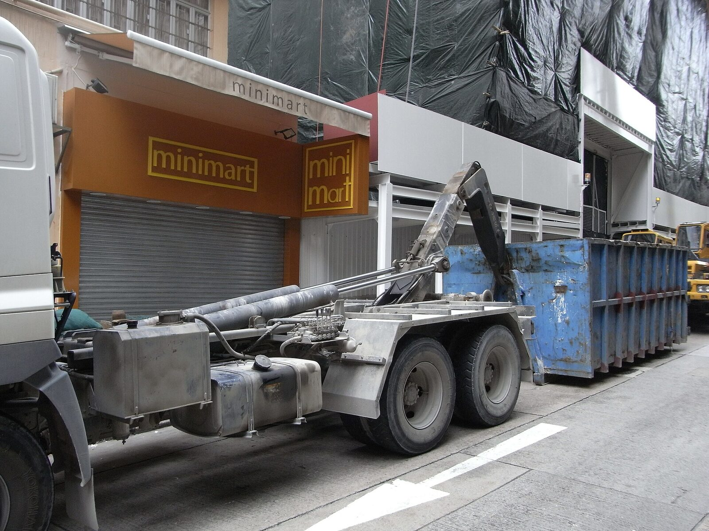
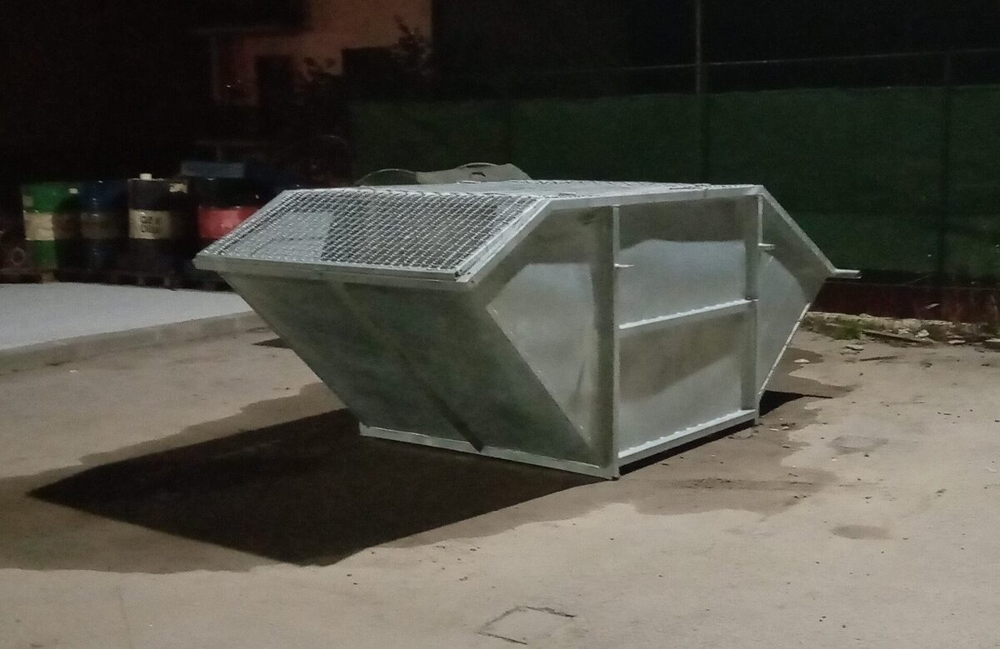
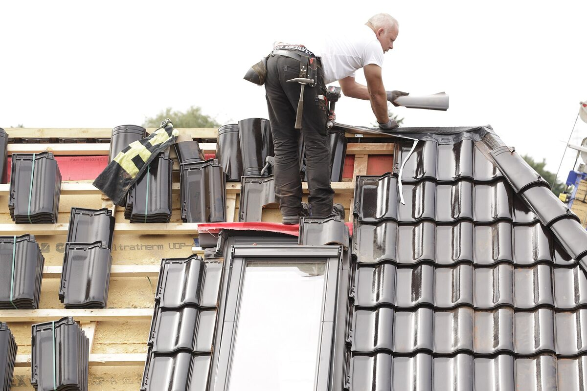
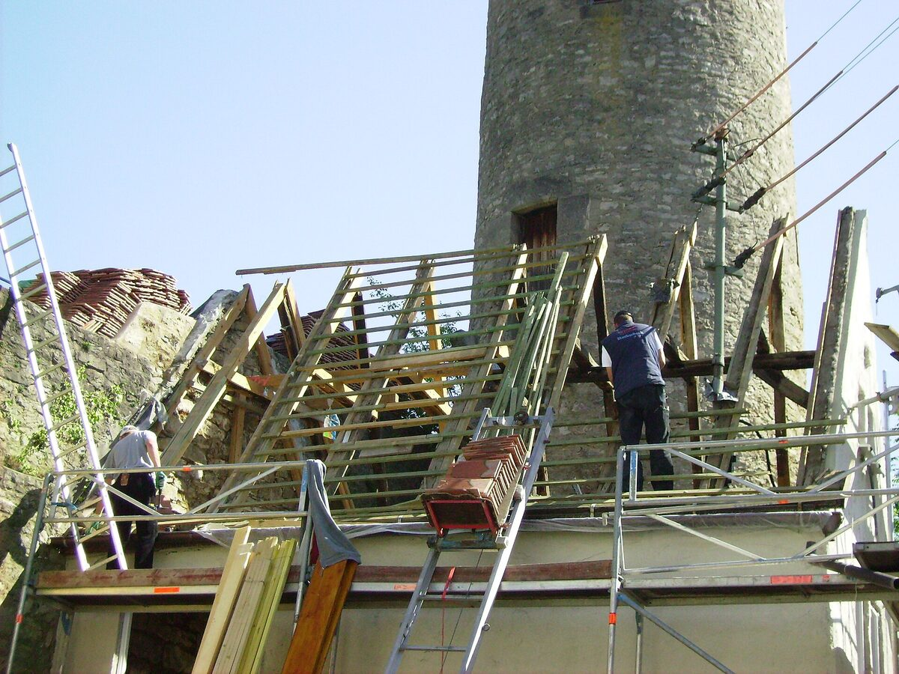
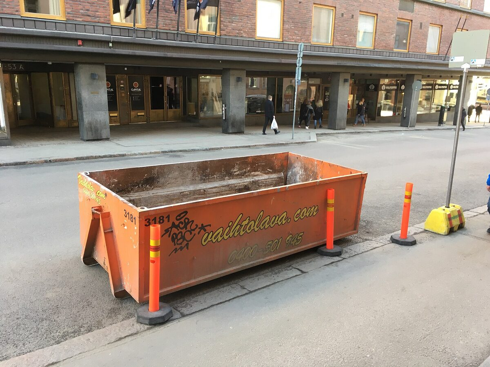

Ремонт криші, частковий ремонт покрівлі, балкони під ключ, фасад утеплення, забори під ключ. Власна бригада, інструмент та транспорт.

Повний спектр покрівельних та будівельних робіт. Ремонт криші, балкони, фасади, забори — все під ключ з гарантією якості.
Капітальний ремонт криші будь-якої складності. Заміна крокв, обрешітки, покрівельного покриття. Працюємо з усіма видами матеріалів.
Локальний ремонт покрівлі — усунення протікань, заміна пошкоджених елементів, герметизація швів та примикань.
Будівництво та ремонт балконів під ключ. Гідроізоляція, утеплення, оздоблення, скління. Повний цикл робіт.
Утеплення фасадів будинків мінеральною ватою та пінополістиролом. Декоративне оздоблення фасадів під ключ.
Встановлення заборів будь-якого типу: металеві, бетонні, дерев'яні, комбіновані. Фундамент, стовпи, секції — все включено.
Гідроізоляція дахів, балконів, терас, фундаментів. Сучасні матеріали з гарантією до 15 років.
Встановлення водостічних систем. Металеві та пластикові водостоки. Правильний розрахунок та професійний монтаж.
Повна заміна покрівельного покриття. Металопрофіль, металочерепиця, бітумна черепиця, фальцева покрівля. Демонтаж старого покриття включено.
Професійне утеплення даху та горищних приміщень. Мінеральна вата, ековата, пінополіуретан. Пароізоляція та вентиляція покрівлі.
Телефонуєте — обговорюємо об'єм робіт, тип покрівлі чи фасаду, адресу об'єкта.
Безкоштовний виїзд на заміри. Оцінюємо стан об'єкта, прораховуємо матеріали та називаємо точну ціну.
Виконуємо всі роботи під ключ — від демонтажу до фінішного оздоблення. Власна бригада та інструмент.
Приймаєте роботу. Прибирання після себе. Оплата готівкою або на карту. Гарантія на всі види робіт.
Маємо власну бригаду майстрів з багаторічним досвідом. Не наймаємо підрядників — відповідаємо за якість.
Є власний професійний інструмент та транспорт. Все необхідне для роботи на об'єкті — в одному місці.
Працюємо тільки з перевіреними матеріалами. Допомагаємо з підбором та закупівлею за вигідними цінами.
Безкоштовний виїзд на заміри. Працюємо без вихідних. Телефонуйте — домовимось.
Реальні фото виконаних робіт. Ремонт криші, балкони, фасади, забори.




Власна бригада, інструмент та транспорт. Ремонт криші, балкони, фасади, забори під ключ.
Телефонуйте, пишіть у месенджер — відповімо на всі питання. Працюємо без вихідних.
Ремонт криші · Ремонт покрівлі · Частковий ремонт криші · Капітальний ремонт даху · Балкони під ключ · Ремонт балконів · Скління балконів · Фасад утеплення · Утеплення фасадів мінватою · Утеплення фасадів пінопластом · Забори під ключ · Встановлення заборів · Металеві забори · Бетонні забори · Гідроізоляція даху · Монтаж водостоків · Заміна покрівлі · Утеплення даху · Покрівельні роботи